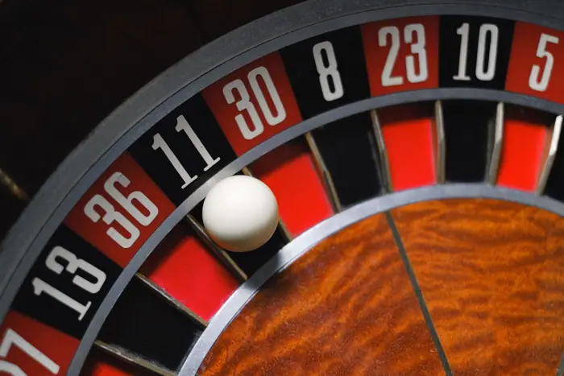

Sports · CBS Sports
Week 2 NFL odds, picks, predictions: Computer model backs Seahawks and Buccaneers
Week 2 NFL odds, picks,: CBS Sports

Introduction
Week 2 NFL odds, picks,: CBS Sports
Background & context (from research brief)
# Week 2 NFL odds, picks, predictions: Computer model backs Seahawks and Buccaneers
Why it matters
The development was reported by CBS Sports. as part of today's news cycle.
Source & further reading
This page aggregates the headline and context; the full original report is linked in the source panel below. Topic keywords: week, odds,, picks,, predictions:, computer.